722 clubs, 722 met logo. Clublogo's: football-logos.cc; bij 'eigen logo' de officiële site van de club of bond, FootyLogos of Wikipedia. De logo's zijn eigendom van de clubs. Bijgewerkt: 2026-11-18.
Geen clubs gevonden.
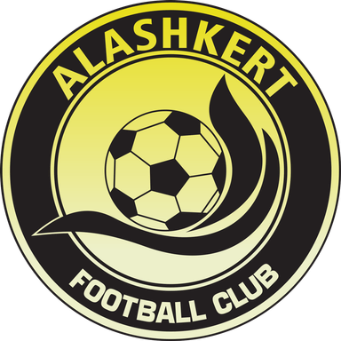
Alashkert FC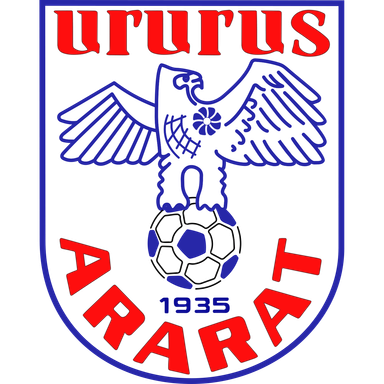
Ararat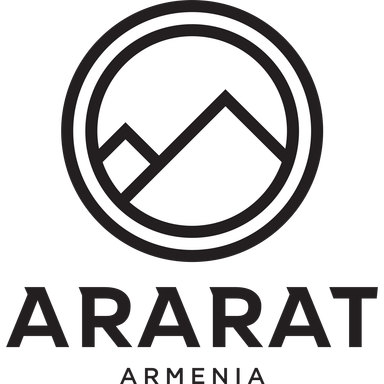
Ararat Armenia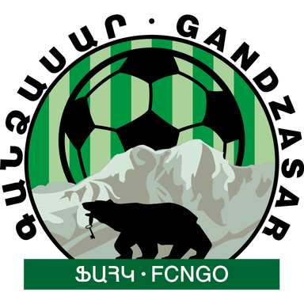
Gandzasar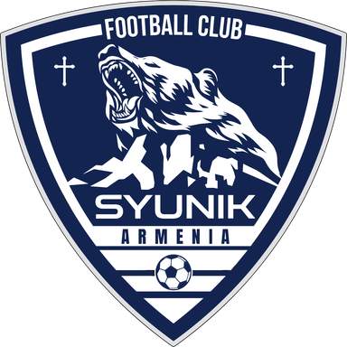
Syunik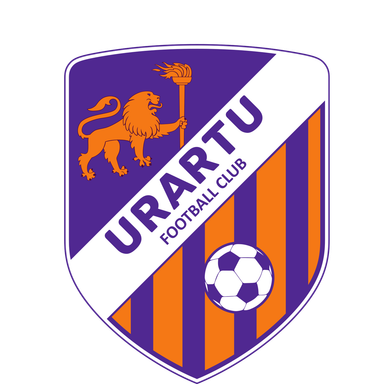
Urartu FC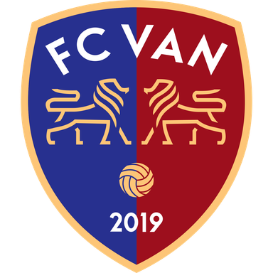
Van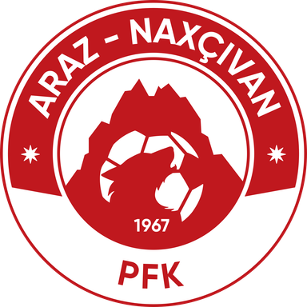
Araz PFK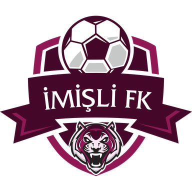
Imisli FK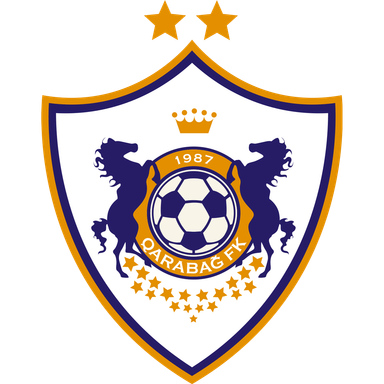
Qarabağ FK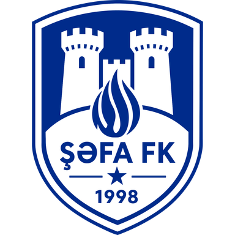
Shafa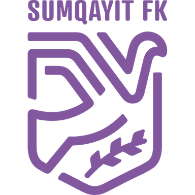
Sumqayıt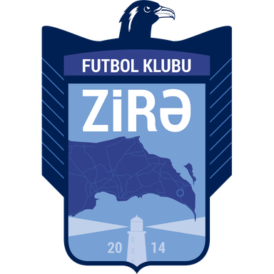
Zira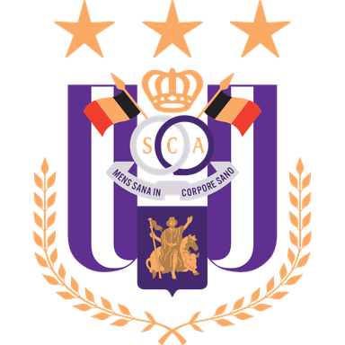
Anderlecht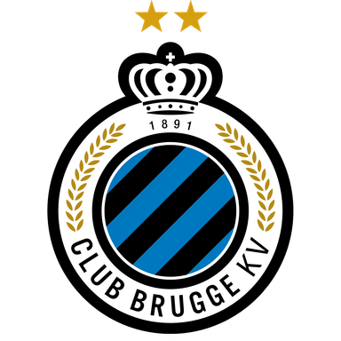
Club Brugge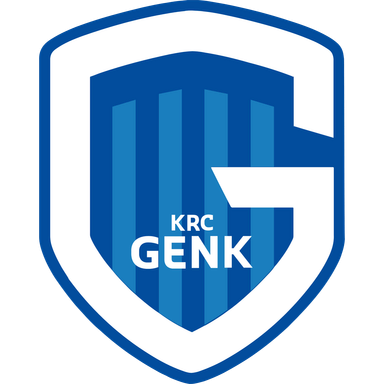
Genk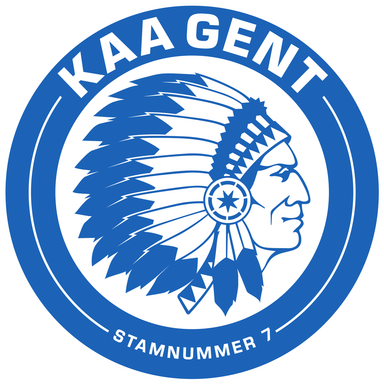
Gent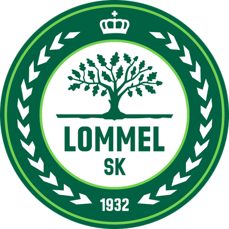
Lommel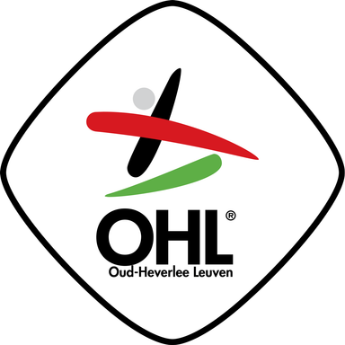
OH Leuven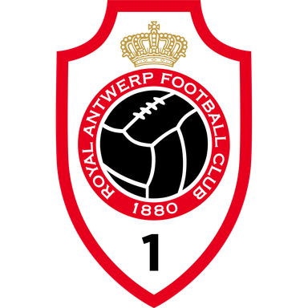
Royal Antwerp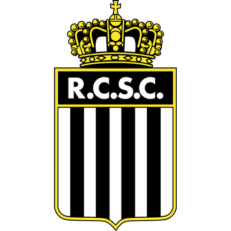
Sporting Charleroi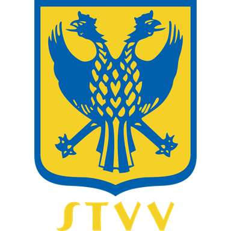
St.Truiden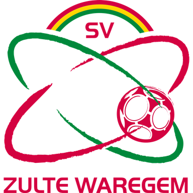
Zulte Waregem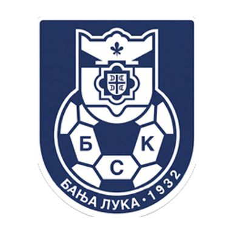
BSK Banja Luka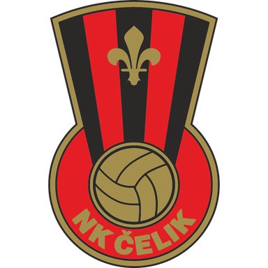
Čelik Zenica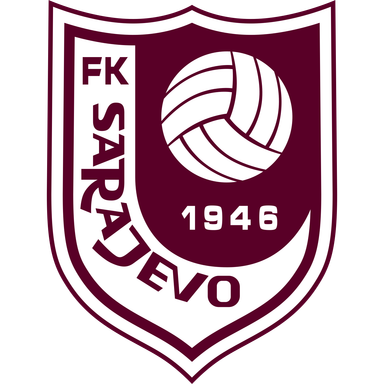
FK Sarajevo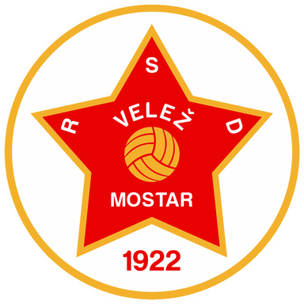
FK Velež Mostar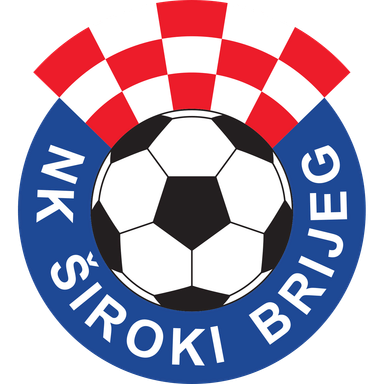
Široki Brijeg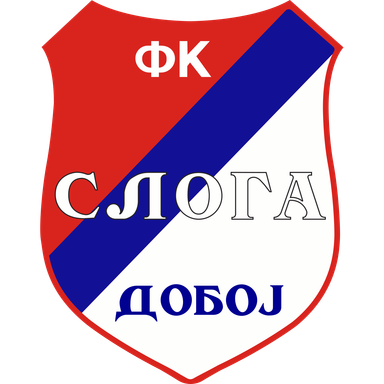
Sloga Doboj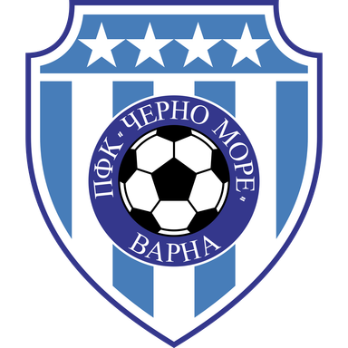
Cherno More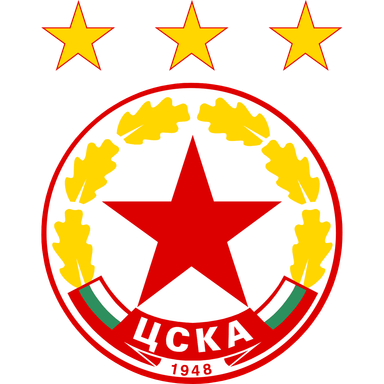
CSKA Sofia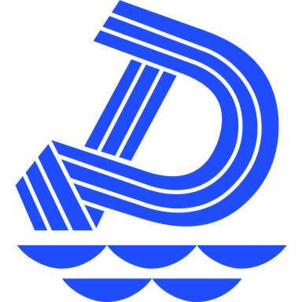
Dunav Ruse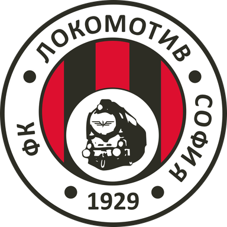
Lokomotiv Sofia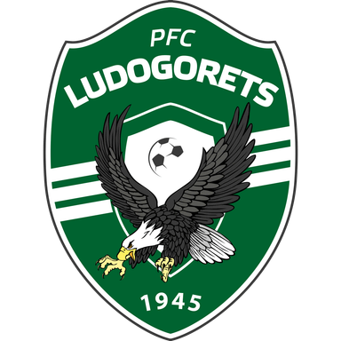
Ludogorets Razgrad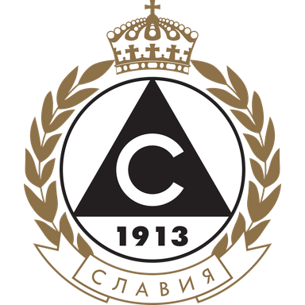
Slavia Sofia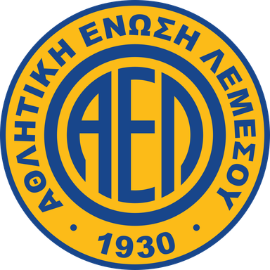
AEL Limassol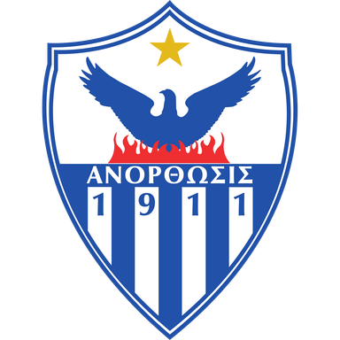
Anorthosis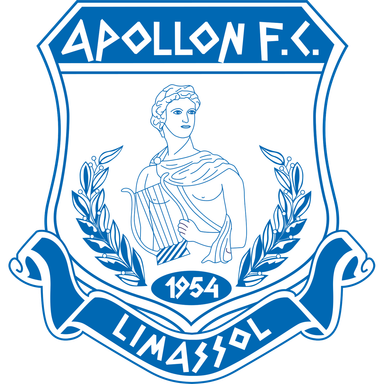
Apollon Limassol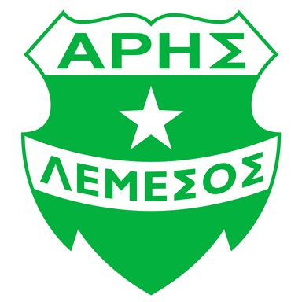
Aris Limassol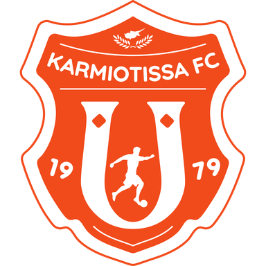
Karmiotissa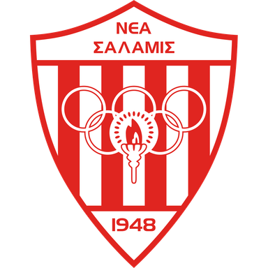
Nea Salamis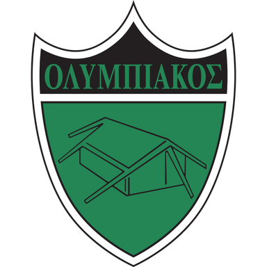
Olympiakos Nicosia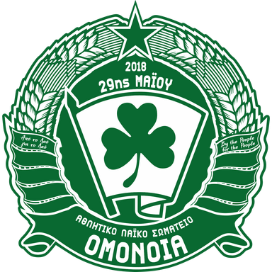
Omonia 29 Maiou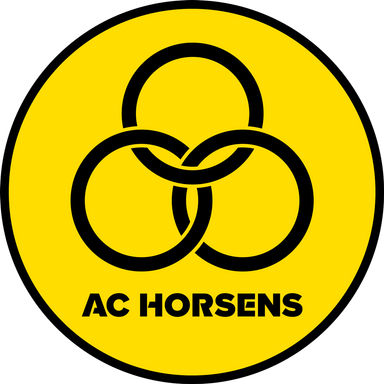
AC Horsens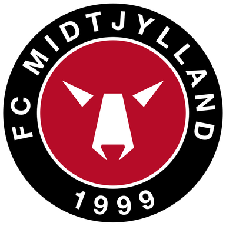
FC Midtjylland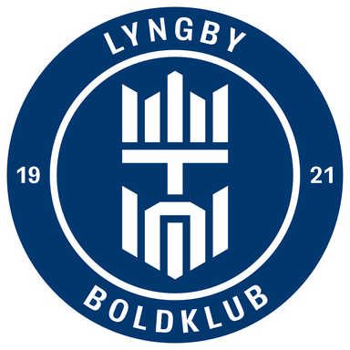
Lyngby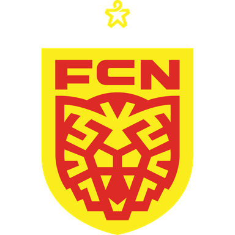
NordsjællandVia Wikimedia Commons: schaal (Forzaruvo94, CC BY-SA 3.0), gouden schaal, Champions League-beker en Conference League-beker (MacMoreno; CC BY-SA 4.0, publiek domein, CC BY 4.0), KNVB Beker (MacMoreno, CC BY-SA 4.0), vlag (publiek domein). Europa League-beker: favpng.com (achtergrond verwijderd). Overige logo's: football-logos.cc.
| 1. | PSV | Eindpositie Eredivisie seizoen 2025/2026 1e |
| 2. | Feyenoord | Eindpositie Eredivisie seizoen 2025/2026 2e |
| 3. | NEC Nijmegen | Eindpositie Eredivisie seizoen 2025/2026 3e |
| 4. | FC Twente | Eindpositie Eredivisie seizoen 2025/2026 4e |
| 5. | Ajax | Eindpositie Eredivisie seizoen 2025/2026 5e |
| 6. | FC Utrecht | Eindpositie Eredivisie seizoen 2025/2026 6e |
| 7. | AZ Alkmaar | Eindpositie Eredivisie seizoen 2025/2026 7e |
| 8. | SC Heerenveen | Eindpositie Eredivisie seizoen 2025/2026 8e |
| 9. | FC Groningen | Eindpositie Eredivisie seizoen 2025/2026 9e |
| 10. | Sparta Rotterdam | Eindpositie Eredivisie seizoen 2025/2026 10e |
| 11. | Fortuna Sittard | Eindpositie Eredivisie seizoen 2025/2026 11e |
| 12. | Go Ahead Eagles | Eindpositie Eredivisie seizoen 2025/2026 12e |
| 13. | Excelsior | Eindpositie Eredivisie seizoen 2025/2026 13e |
| 14. | Telstar | Eindpositie Eredivisie seizoen 2025/2026 14e |
| 15. | PEC Zwolle | Eindpositie Eredivisie seizoen 2025/2026 15e |
| 16. | ADO Den Haag | Eindpositie KKD seizoen 2025/2026 1e |
| 17. | Cambuur | Eindpositie KKD seizoen 2025/2026 2e |
| 18. | Willem II | Eindpositie KKD seizoen 2025/2026 3e |
| 1. | PSV | Eindpositie Eredivisie seizoen 2025/2026 1e |
| 2. | Feyenoord | Eindpositie Eredivisie seizoen 2025/2026 2e |
| 3. | NEC Nijmegen | Eindpositie Eredivisie seizoen 2025/2026 3e |
| 4. | FC Twente | Eindpositie Eredivisie seizoen 2025/2026 4e |
| 5. | Ajax | Eindpositie Eredivisie seizoen 2025/2026 5e |
| 6. | FC Utrecht | Eindpositie Eredivisie seizoen 2025/2026 6e |
| 7. | AZ Alkmaar | Eindpositie Eredivisie seizoen 2025/2026 7e |
| 8. | SC Heerenveen | Eindpositie Eredivisie seizoen 2025/2026 8e |
| 9. | FC Groningen | Eindpositie Eredivisie seizoen 2025/2026 9e |
| 10. | Sparta Rotterdam | Eindpositie Eredivisie seizoen 2025/2026 10e |
| 11. | Fortuna Sittard | Eindpositie Eredivisie seizoen 2025/2026 11e |
| 12. | Go Ahead Eagles | Eindpositie Eredivisie seizoen 2025/2026 12e |
| 13. | Excelsior | Eindpositie Eredivisie seizoen 2025/2026 13e |
| 14. | Telstar | Eindpositie Eredivisie seizoen 2025/2026 14e |
| 15. | PEC Zwolle | Eindpositie Eredivisie seizoen 2025/2026 15e |
| 16. | ADO Den Haag | Eindpositie KKD seizoen 2025/2026 1e |
| 17. | Cambuur | Eindpositie KKD seizoen 2025/2026 2e |
| 18. | Willem II | Eindpositie KKD seizoen 2025/2026 3e |
| 19. | FC Volendam | Eindpositie Eredivisie seizoen 2025/2026 16e |
| 20. | NAC Breda | Eindpositie Eredivisie seizoen 2025/2026 17e |
| 21. | Heracles Almelo | Eindpositie Eredivisie seizoen 2025/2026 18e |
| 22. | De Graafschap | Eindpositie KKD seizoen 2025/2026 4e |
| 23. | Almere City FC | Eindpositie KKD seizoen 2025/2026 5e |
| 24. | RKC Waalwijk | Eindpositie KKD seizoen 2025/2026 6e |
| 25. | Roda JC Kerkrade | Eindpositie KKD seizoen 2025/2026 8e |
| 26. | FC Den Bosch | Eindpositie KKD seizoen 2025/2026 9e |
| 27. | FC Dordrecht | Eindpositie KKD seizoen 2025/2026 10e |
| 28. | FC Eindhoven | Eindpositie KKD seizoen 2025/2026 11e |
| 29. | VVV-Venlo | Eindpositie KKD seizoen 2025/2026 13e |
| 30. | FC Emmen | Eindpositie KKD seizoen 2025/2026 14e |
| 31. | Vitesse | Eindpositie KKD seizoen 2025/2026 15e |
| 32. | TOP Oss | Eindpositie KKD seizoen 2025/2026 16e |
| 33. | Helmond Sport | Eindpositie KKD seizoen 2025/2026 18e |
| 34. | MVV Maastricht | Eindpositie KKD seizoen 2025/2026 19e |
| 35. | Amateurclub |
| 1. | Paris Saint-Germain (Frankrijk) | Winnaar Champions League seizoen 2025/2026 |
| 2. | Bayern München (Duitsland) | Plek 1 op de UEFA Coëfficiënten Ranglijst met 147,5 punten |
| 3. | Real Madrid (Spanje) | Plek 2 op de UEFA Coëfficiënten Ranglijst met 144,5 punten |
| 4. | Liverpool (Engeland) | Plek 4 op de UEFA Coëfficiënten Ranglijst met 130 punten |
| 5. | FC Internazionale Milano (Italië) | Plek 5 op de UEFA Coëfficiënten Ranglijst met 127 punten |
| 6. | Manchester City (Engeland) | Plek 6 op de UEFA Coëfficiënten Ranglijst met 125,5 punten |
| 7. | Arsenal (Engeland) | Plek 7 op de UEFA Coëfficiënten Ranglijst met 119 punten |
| 8. | FC Barcelona (Spanje) | Plek 8 op de UEFA Coëfficiënten Ranglijst met 113,25 punten |
| 9. | Atlético de Madrid (Spanje) | Plek 10 op de UEFA Coëfficiënten Ranglijst met 104,75 punten |
| 10. | Borussia Dortmund (Duitsland) | Plek 11 op de UEFA Coëfficiënten Ranglijst met 100,75 punten |
| 11. | AS Roma (Italië) | Plek 13 op de UEFA Coëfficiënten Ranglijst met 97,75 punten |
| 12. | Sporting CP (Portugal) | Plek 15 op de UEFA Coëfficiënten Ranglijst met 84 punten |
| 13. | Aston Villa (Engeland) | Plek 17 op de UEFA Coëfficiënten Ranglijst met 83 punten |
| 14. | FC Porto (Portugal) | Plek 20 op de UEFA Coëfficiënten Ranglijst met 80,75 punten |
| 15. | Manchester United (Engeland) | Plek 21 op de UEFA Coëfficiënten Ranglijst met 76,5 punten |
| 16. | Club Brugge (België) | Plek 23 op de UEFA Coëfficiënten Ranglijst met 75,25 punten |
| 17. | Real Betis (Spanje) | Plek 24 op de UEFA Coëfficiënten Ranglijst met 74,5 punten |
| 18. | PSV (Nederland) | Plek 26 op de UEFA Coëfficiënten Ranglijst met 71,25 punten |
| 19. | Feyenoord (Nederland) | Plek 27 op de UEFA Coëfficiënten Ranglijst met 71 punten |
| 20. | Lille LOSC (Frankrijk) | Plek 29 op de UEFA Coëfficiënten Ranglijst met 68,75 punten |
| 21. | Bodø/Glimt (Noorwegen) | Plek 32 op de UEFA Coëfficiënten Ranglijst met 64 punten |
| 22. | SSC Napoli (Italië) | Plek 34 op de UEFA Coëfficiënten Ranglijst met 63 punten |
| 23. | RB Leipzig (Duitsland) | Plek 37 op de UEFA Coëfficiënten Ranglijst met 61 punten |
| 24. | Villarreal CF (Spanje) | Plek 39 op de UEFA Coëfficiënten Ranglijst met 59 punten |
| 25. | Fenerbahçe (Turkije) | Plek 42 op de UEFA Coëfficiënten Ranglijst met 57,75 punten |
| 26. | Shakhtar Donetsk (Oekraïne) | Plek 45 op de UEFA Coëfficiënten Ranglijst met 56,25 punten |
| 27. | Galatasaray (Turkije) | Plek 49 op de UEFA Coëfficiënten Ranglijst met 53,5 punten |
| 28. | Slavia Praha (Tsjechië) | Plek 59 op de UEFA Coëfficiënten Ranglijst met 44 punten |
| 29. | Slovan Bratislava (Slowakije) | Plek 65 op de UEFA Coëfficiënten Ranglijst met 36 punten |
| 30. | VfB Stuttgart (Duitsland) | Plek 80 op de UEFA Coëfficiënten Ranglijst met 27,5 punten |
| 31. | AEK Athens (Griekenland) | Plek 84 op de UEFA Coëfficiënten Ranglijst met 24 punten |
| 32. | LASK (Oostenrijk) | Plek 99 op de UEFA Coëfficiënten Ranglijst met 21 punten |
| 33. | Como 1907 (Italië) | Geen eigen punten, dus 20% van het land: 19,989 punten |
| 34. | RC Lens (Frankrijk) | Plek 120 op de UEFA Coëfficiënten Ranglijst met 16,699 punten |
| 35. | Viking (Noorwegen) | Plek 202 op de UEFA Coëfficiënten Ranglijst met 8,247 punten |
| 36. | Sabah FK (Azerbeidzjan) | Plek 244 op de UEFA Coëfficiënten Ranglijst met 6 punten |
| 1. | Bayer 04 Leverkusen (Duitsland) | Plek 9 op de UEFA Coëfficiënten Ranglijst met 105 punten |
| 2. | SL Benfica (Portugal) | Plek 14 op de UEFA Coëfficiënten Ranglijst met 90 punten |
| 3. | Juventus (Italië) | Plek 25 op de UEFA Coëfficiënten Ranglijst met 72,25 punten |
| 4. | AC Milan (Italië) | Plek 30 op de UEFA Coëfficiënten Ranglijst met 66 punten |
| 5. | Olympique Lyonnais (Frankrijk) | Plek 31 op de UEFA Coëfficiënten Ranglijst met 65,75 punten |
| 6. | AZ Alkmaar (Nederland) | Plek 35 op de UEFA Coëfficiënten Ranglijst met 62,875 punten |
| 7. | Olympiacos (Griekenland) | Plek 36 op de UEFA Coëfficiënten Ranglijst met 62,25 punten |
| 8. | Real Sociedad (Spanje) | Plek 43 op de UEFA Coëfficiënten Ranglijst met 57 punten |
| 9. | Olympique de Marseille (Frankrijk) | Plek 48 op de UEFA Coëfficiënten Ranglijst met 54 punten |
| 10. | Ferencváros (Hongarije) | Plek 50 op de UEFA Coëfficiënten Ranglijst met 51,25 punten |
| 11. | Viktoria Plzeň (Tsjechië) | Plek 51 op de UEFA Coëfficiënten Ranglijst met 50,5 punten |
| 12. | Union Saint-Gilloise (België) | Plek 54 op de UEFA Coëfficiënten Ranglijst met 48 punten |
| 13. | Dinamo Zagreb (Kroatië) | Plek 56 op de UEFA Coëfficiënten Ranglijst met 46,5 punten |
| 14. | FC Red Bull Salzburg (Oostenrijk) | Plek 57 op de UEFA Coëfficiënten Ranglijst met 45 punten |
| 15. | Celtic (Schotland) | Plek 58 op de UEFA Coëfficiënten Ranglijst met 44 punten |
| 16. | Sparta Praha (Tsjechië) | Plek 64 op de UEFA Coëfficiënten Ranglijst met 38,25 punten |
| 17. | Stade Rennais F.C. (Frankrijk) | Plek 66 op de UEFA Coëfficiënten Ranglijst met 35 punten |
| 18. | Anderlecht (België) | Plek 72 op de UEFA Coëfficiënten Ranglijst met 30,75 punten |
| 19. | Sturm Graz (Oostenrijk) | Plek 79 op de UEFA Coëfficiënten Ranglijst met 28 punten |
| 20. | Lech Poznań (Polen) | Plek 81 op de UEFA Coëfficiënten Ranglijst met 27,25 punten |
| 21. | Crystal Palace (Engeland) | Plek 86 op de UEFA Coëfficiënten Ranglijst met 23,903 punten |
| 22. | AFC Bournemouth (Engeland) | Geen eigen punten, dus 20% van het land: 23,903 punten |
| 23. | Sunderland (Engeland) | Geen eigen punten, dus 20% van het land: 23,903 punten |
| 24. | NK Celje (Slovenië) | Plek 89 op de UEFA Coëfficiënten Ranglijst met 23 punten |
| 25. | Jagiellonia Białystok (Polen) | Plek 93 op de UEFA Coëfficiënten Ranglijst met 22 punten |
| 26. | Omonoia (Cyprus) | Plek 97 op de UEFA Coëfficiënten Ranglijst met 21,25 punten |
| 27. | RC Celta (Spanje) | Plek 104 op de UEFA Coëfficiënten Ranglijst met 19,409 punten |
| 28. | Hoffenheim (Duitsland) | Plek 112 op de UEFA Coëfficiënten Ranglijst met 18,58 punten |
| 29. | Beşiktaş (Turkije) | Plek 123 op de UEFA Coëfficiënten Ranglijst met 15,5 punten |
| 30. | Torreense (Portugal) | Geen eigen punten, dus 20% van het land: 14,633 punten |
| 31. | Hapoel Beer Sheva (Israël) | Plek 132 op de UEFA Coëfficiënten Ranglijst met 14 punten |
| 32. | NEC Nijmegen (Nederland) | Geen eigen punten, dus 20% van het land: 13,585 punten |
| 33. | OFI Crete (Griekenland) | Geen eigen punten, dus 20% van het land: 9,682 punten |
| 34. | Lillestrøm (Noorwegen) | Plek 204 op de UEFA Coëfficiënten Ranglijst met 8,247 punten |
| 35. | Levski Sofia (Bulgarije) | Plek 222 op de UEFA Coëfficiënten Ranglijst met 7 punten |
| 36. | Ararat Armenia (Armenië) | Plek 224 op de UEFA Coëfficiënten Ranglijst met 7 punten |
| 1. | Atalanta (Italië) | Plek 16 op de UEFA Coëfficiënten Ranglijst met 84 punten |
| 2. | SC Braga (Portugal) | Plek 33 op de UEFA Coëfficiënten Ranglijst met 63,75 punten |
| 3. | Ajax (Nederland) | Plek 41 op de UEFA Coëfficiënten Ranglijst met 58,25 punten |
| 4. | Freiburg (Duitsland) | Plek 44 op de UEFA Coëfficiënten Ranglijst met 56,5 punten |
| 5. | AS Monaco (Frankrijk) | Plek 46 op de UEFA Coëfficiënten Ranglijst met 56 punten |
| 6. | FC København (Denemarken) | Plek 47 op de UEFA Coëfficiënten Ranglijst met 54,375 punten |
| 7. | FC Midtjylland (Denemarken) | Plek 52 op de UEFA Coëfficiënten Ranglijst met 48,25 punten |
| 8. | FK Crvena Zvezda (Servië) | Plek 55 op de UEFA Coëfficiënten Ranglijst met 46,5 punten |
| 9. | Gent (België) | Plek 61 op de UEFA Coëfficiënten Ranglijst met 39 punten |
| 10. | Panathinaikos (Griekenland) | Plek 76 op de UEFA Coëfficiënten Ranglijst met 29,25 punten |
| 11. | Pafos FC (Cyprus) | Plek 83 op de UEFA Coëfficiënten Ranglijst met 24,125 punten |
| 12. | Brighton & Hove Albion (Engeland) | Plek 87 op de UEFA Coëfficiënten Ranglijst met 23,903 punten |
| 13. | Lugano (Zwitserland) | Plek 98 op de UEFA Coëfficiënten Ranglijst met 21,25 punten |
| 14. | Getafe CF (Spanje) | Geen eigen punten, dus 20% van het land: 19,409 punten |
| 15. | KuPS (Finland) | Plek 130 op de UEFA Coëfficiënten Ranglijst met 14 punten |
| 16. | FC Twente (Nederland) | Plek 136 op de UEFA Coëfficiënten Ranglijst met 13,585 punten |
| 17. | Lincoln Red Imps (Gibraltar) | Plek 138 op de UEFA Coëfficiënten Ranglijst met 13,5 punten |
| 18. | Borac Banja Luka (Bosnië en Herzegovina) | Plek 140 op de UEFA Coëfficiënten Ranglijst met 13,125 punten |
| 19. | St.Truiden (België) | Geen eigen punten, dus 20% van het land: 12,45 punten |
| 20. | Brann (Noorwegen) | Plek 148 op de UEFA Coëfficiënten Ranglijst met 12,25 punten |
| 21. | Heart of Midlothian (Schotland) | Plek 154 op de UEFA Coëfficiënten Ranglijst met 11,5 punten |
| 22. | FK Kairat Almaty (Kazachstan) | Plek 156 op de UEFA Coëfficiënten Ranglijst met 11 punten |
| 23. | Trabzonspor (Turkije) | Plek 158 op de UEFA Coëfficiënten Ranglijst met 11 punten |
| 24. | Universitatea Craiova (Roemenië) | Plek 161 op de UEFA Coëfficiënten Ranglijst met 10,5 punten |
| 25. | Riga FC (Letland) | Plek 162 op de UEFA Coëfficiënten Ranglijst met 10,5 punten |
| 26. | Hajduk Split (Kroatië) | Plek 172 op de UEFA Coëfficiënten Ranglijst met 10 punten |
| 27. | Jablonec (Tsjechië) | Plek 181 op de UEFA Coëfficiënten Ranglijst met 9,705 punten |
| 28. | Nordsjælland (Denemarken) | Plek 196 op de UEFA Coëfficiënten Ranglijst met 8,421 punten |
| 29. | AGF Aarhus (Denemarken) | Plek 197 op de UEFA Coëfficiënten Ranglijst met 8,421 punten |
| 30. | Inter Club d'Escaldes (Andorra) | Plek 214 op de UEFA Coëfficiënten Ranglijst met 7,5 punten |
| 31. | Thun (Zwitserland) | Geen eigen punten, dus 20% van het land: 6,94 punten |
| 32. | CSKA Sofia (Bulgarije) | Plek 237 op de UEFA Coëfficiënten Ranglijst met 6,5 punten |
| 33. | FK Kauno Žalgiris (Litouwen) | Plek 246 op de UEFA Coëfficiënten Ranglijst met 6 punten |
| 34. | Mjällby (Zweden) | Geen eigen punten, dus 20% van het land: 5,925 punten |
| 35. | Iberia 1999 (Georgië) | Plek 289 op de UEFA Coëfficiënten Ranglijst met 5 punten |
| 36. | Egnatia (Albanië) | Plek 310 op de UEFA Coëfficiënten Ranglijst met 4,5 punten |